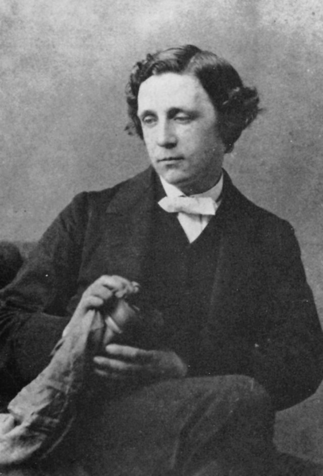

Lewis Carroll
(Charles Lutwidge
Dodgson)
Mostly known for his works about Alice, Carroll was also a poet, mathematician, clergyman,
photographer, and inventor.

- .... . -.-- / -.. .. -.. / --. -.-- .-. . / .- -. -.. / --.
.. -- -... .-.. . / .. -. / - .... . / .-- .- -... .